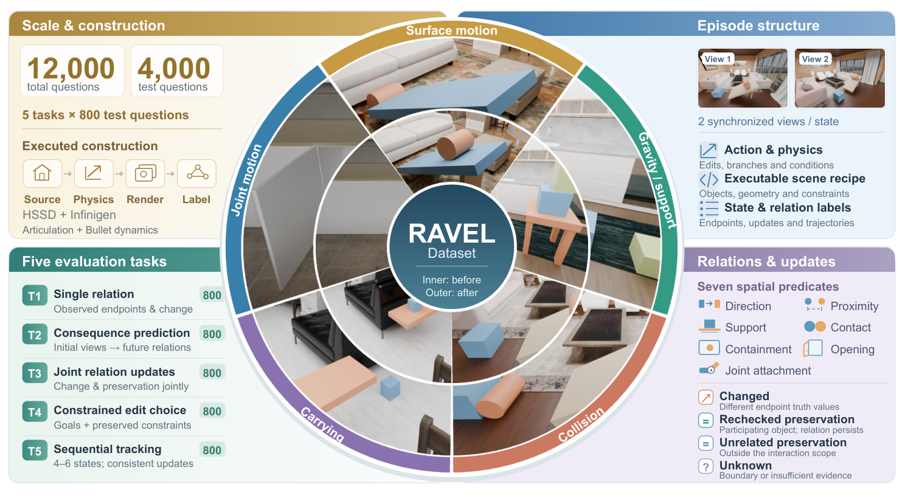
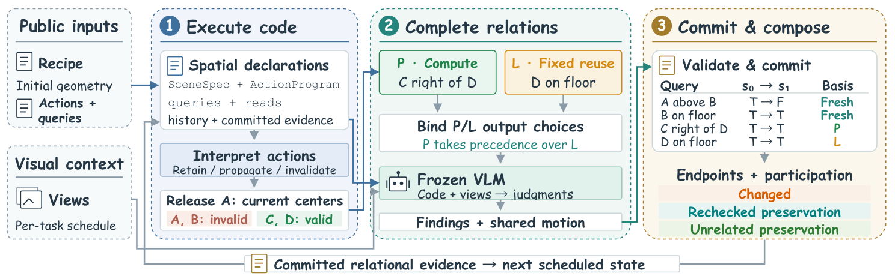
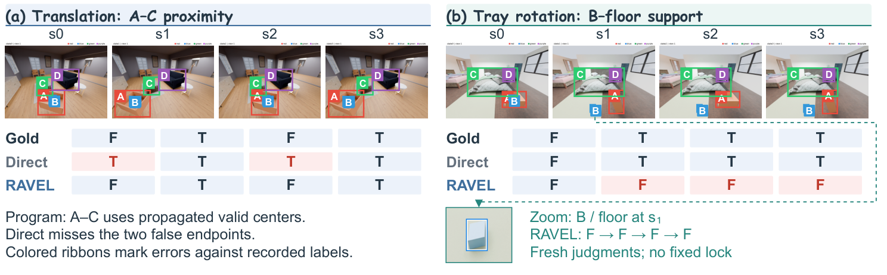

Single relation
Establish observed endpoints and their change.
Spatial reasoning under physical actions
Understand what changes.
Remember what still holds.
Moving an object can change its distance to a table while leaving it supported by the floor. A collision can move a second object while the rest of the room stays in place.
Selective spatial relation reasoning means establishing the relation at both endpoints, then distinguishing change from preservation within—and outside—the action’s participation scope.
RAVEL represents scenes, actions, dependencies, and evidence in code. A training-free harness executes this representation and works with a frozen vision-language model to compose complete relational answers.
Indoor scenes from HSSD and Infinigen, executed physical actions, two synchronized views per state, and traceable relation labels.


Drag the divider to compare recorded before and after views of the same episode.

View full size ↗Dataset overview · Paper Figure 2. Image availability is task-dependent; future states for prediction and candidate-edit tasks are reserved for evaluation.
Establish observed endpoints and their change.
Predict future relations from initial views and an action.
Track multiple relations and both kinds of preservation.
Select every edit that achieves goals and preserves constraints.
Maintain consistent answers across four to six states.
Dataset scale follows the supplied manuscript. The full downloadable release will be linked here when available; this page provides recorded visual examples.
Relation-Aware Validity and Evidence Linking connects action-dependent attribute validity with computed, fresh, and retained findings.

View full size ↗RAVEL execution loop · Paper Figure 3. Committed relational evidence carries forward to the next scheduled state.
Compile public scene recipes, actions, and queries. Retain or propagate supported attributes; invalidate numerical premises after unsupported motion.
Compute supported relations and reuse eligible fixed evidence. The frozen VLM reads spatial code and permitted views to resolve the remaining findings.
Validate typed findings, commit their evidence, and combine endpoints with participation into changes, preservation, or admissible edits.
Different endpoint truth values.
A participant moves or is controlled; the relation persists.
The relation persists outside the interaction scope.
The full configuration improves whole-question accuracy by 13.35–19.80 percentage points. Matched controls separate the contribution of executable organization.
Whole-question accuracy requires every semantic item to be correct. High item accuracy can still leave complete multi-state answers unresolved.
With raw information and calls matched, Qwen gains 18.20 points in Whole; Astra gains 2.20 points, with a small decrease in changed F1.
Retained evidence may remain applicable yet preserve an initial error. Unsupported physical outcomes still require fresh model judgments.
Recorded trajectories show both successful geometry propagation and repeated visual misjudgments.

View full size ↗Recorded correction and regression · Paper Figure 6. Left: supported center propagation corrects proximity. Right: fresh visual judgments repeatedly miss floor support. These are selected traces, not aggregate success rates.
The harness compiles public declarations into spatial code. The model supplies relation observations; it does not have to write programs or select tools.
Code release pending. The paper and its supplement describe declarations, query semantics, action interpretation, and the evidence-update protocol.
Read the paper with supplementary material# A scene retains origins and current validity.
scene.object("A",
origin={...},
current_geometry=None)
# Public declarations structure the context.
SceneSpec # objects, frames, attributes
ActionProgram # prescribed edits and actions
queries # predicates and dependencies
evidence # findings, sources, validity
# Execute → complete → commit → compose
# Unsupported geometry stays unresolved.